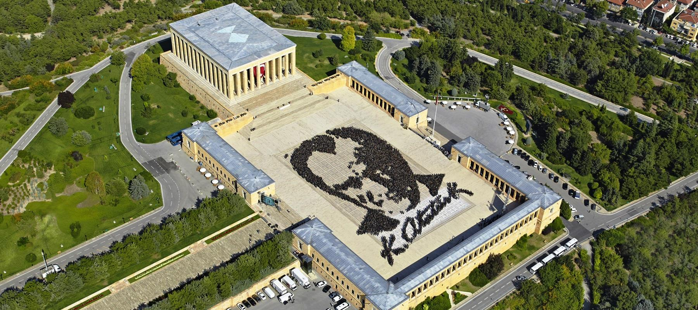
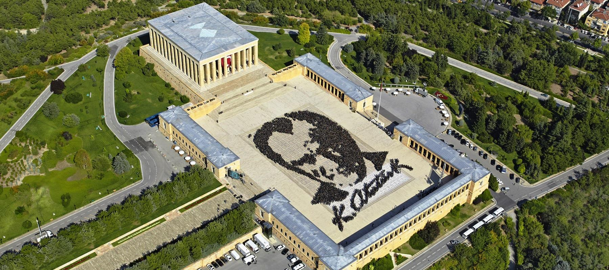

Anadolu Medeniyetleri Müzesi Ankara Ulus ilçesi Atpazarı olarak adlandırılan semtte, Ankara Kalesi’nin dış duvarının güneydoğu kıyısında yeni işlev verilerek düzenlenmiş iki Osmanlı binasından oluşmaktadır. Bu yapılardan biri Mahmut Paşa Bedesteni, diğeri Kurşunlu Han’dır.
Mahmut Paşa Bedesteni’nin Fatih dönemi baş vezirlerinden Mahmut Paşa tarafından 1464-1471 yılları arasında yapıldığı tahmin edilmektedir. Kurşunlu Han’ın ise Fatih dönemi baş vezirlerinden Mehmet Paşa’nın İstanbul’un Üsküdar ilçesindeki imaretine vakıf olarak yaptırılmıştır.1881 yılındaki yangından sonra terk edilen her iki yapı daha sonra Atatürk’ün isteği ile Anadolu’dan toplanan eserleri sergilemek amacıyla uzun yıllar süren yenileme çalışmaları sonucunda müzeye dönüştürülmüştür.
Bedestenin orta bölümünde yer alan kubbeli mekânın büyük bir kısmının onarımının 1940 yılında bitirilmesi ile eserler, yerleştirilmeye başlanmış, 1943 yılında binaların onarımı devam ederken, orta bölüm ziyarete açılmıştır. Müze yapısı 1968 yılında son şeklini almıştır. Bugün idari bina olarak kullanılan Kurşunlu Han’da araştırmacı odaları, kütüphane, konferans salonu, laboratuvar ve iş atölyeleri yer almakta, Mahmut Paşa Bedesteni ise teşhir salonu olarak kullanılmaktadır.
Tarihi yapıları, köklü geçmişi ile bugünlere gelen Anadolu Medeniyetleri Müzesi 19 Nisan 1997 tarihinde İsviçre'nin Lozan kentinde 68 Müze arasında birinci seçilerek "Avrupa'da Yılın Müzesi" unvanını elde etmiştir.
Bugün kendine özgü koleksiyonları ile dünyanın sayılı müzeleri arasında yer alan Anadolu Medeniyetleri Müzesi'nde Anadolu arkeolojik eserleri Paleolitik Çağ’dan başlayarak günümüze kadar, kronolojik bir sırayla sergilenmektedir.
Anadolu Medeniyetleri Müzesi Ankara Ulus ilçesi Atpazarı olarak adlandırılan semtte, Ankara Kalesi’nin dış duvarının güneydoğu kıyısında yeni işlev verilerek düzenlenmiş iki Osmanlı binasından oluşmaktadır. Bu yapılardan biri Mahmut Paşa Bedesteni, diğeri Kurşunlu Han’dır.
Müze, ülkemizin ilk mimarlık ve mobilya müzesidir. 25 Aralık 2008 tarihinde açılmıştır. Lodumlu Doğramacı caddesinde, Melik konağındadır. Bilkent’in ünlü Merik Konağı veya halk arasında bilinen ismi ile “Altın Köşk” tür. Bu bina: Anadolu mimarisinin iç ve dış mekanlarında kullanılmış, simgeleşmiş 1000 adet form ve motiften ve 30 adet yapıdan (köşk, konak, saray, cami, ev) örnekler alınarak, zengin bir kültürel birikimin karışımı olarak tasarlanmıştır.
 

Anıtkabir’de tören alanından Anıt bloğuna doğru bakıldığında, sağda yer alan Misak-ı Millî Kulesi’nin kapısından girilen müze, 21 Haziran 1960 tarihinde Anıtkabir Atatürk Müzesi adıyla açılmıştır. 2001 yılında Anıtkabir Komutanlığı’nın hazırladığı proje doğrultusunda müzeye, Atatürk’ün mozolesinin bulunduğu şeref salonunun altında bulunan yaklaşık 3 bin metrekarelik sütunlu alanın da eklenmesine karar verilmiştir. Bu projenin hayata geçmesiyle müze 5 bin 200 metrekarelik sergi alanına ulaşmıştır. 26 Ağustos 2002 tarihinde yeni eklenen bölümlerle birlikte devlet töreniyle açılan müze bu tarihten itibaren, Atatürk ve Kurtuluş Savaşı Müzesi adını almıştır.
Müze dört ana bölümden oluşmaktadır.
Birinci bölümde, Atatürk’ün kullandığı eşyalar, kendisine yabancı devlet adamları tarafından hediye edilen eşyalar ile Atatürk’ün manevi evlatlarından Afet İnan, Rukiye Erkin ve Sabiha Gökçen tarafından müzeye bağışlanan Atatürk’e ait eşyalar bulunmaktadır.
İkinci bölümde, Çanakkale Savaşları, Sakarya Meydan Savaşı ve Büyük Taarruz’un anlatıldığı panorama ile yağlı boya tablolar yer alır. Bu bölümde ziyaretçilere Türkiye Cumhuriyeti’nin kuruluşuna giden yolda yaşanan güçlükler hissettirilmeye çalışılmaktadır.
Üçüncü bölümde, Millî Mücadele ve devrimlerin anlatıldığı galeriler ile Mustafa Kemal Atatürk’ün mezar odası yer alır. Bu bölümde 1919-1938 yılları arasında, Atatürk dönemine ilişkin olaylar Türkçe ve İngilizce açıklamalarla anlatılmaktadır.
Dördüncü bölümde, Mustafa Kemal Atatürk’ün kütüphanesinde yer alan 3.123 adet kitabın sergilendiği Atatürk Özel Kitaplığı bulunmaktadır. Anıtkabir’in inşası, Atatürk’ün hayatı ve Anıtkabir’de yapılan törenlerin belgelerinin yer aldığı bilgisayarlar da bu bölümde yer almaktadır.